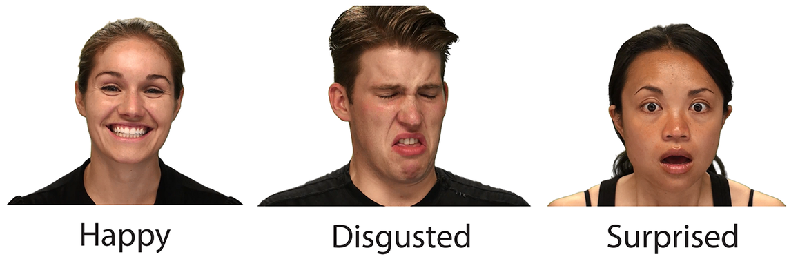

Background
The Ryerson Audio-Visual Database of Emotional Speech and Song (RAVDEES) provides audio files of different actors speaking the same phrases using different emotions, which have been categorized by several thousand people. Using this data it is possible to train a model which can decipher the general emotion of a given speech.
Pre-Processing
Audio files were analyzed and three features appropriate for human speech were extractred. Each feature provided information related to the average frequency and amplitude which was averaged over for the legnth of audio.


Machine Learning and Results
TensorFlow and Scikit-Learn neural network models were used to find the best fit of the data. While the Multi-Layer Perceptron neural network generally fitted the data faster, the TensorFlow model almost always had a better fit. Overall the greatest accuracy that could be acheived between both of these models and using the data provided was just under 70%.